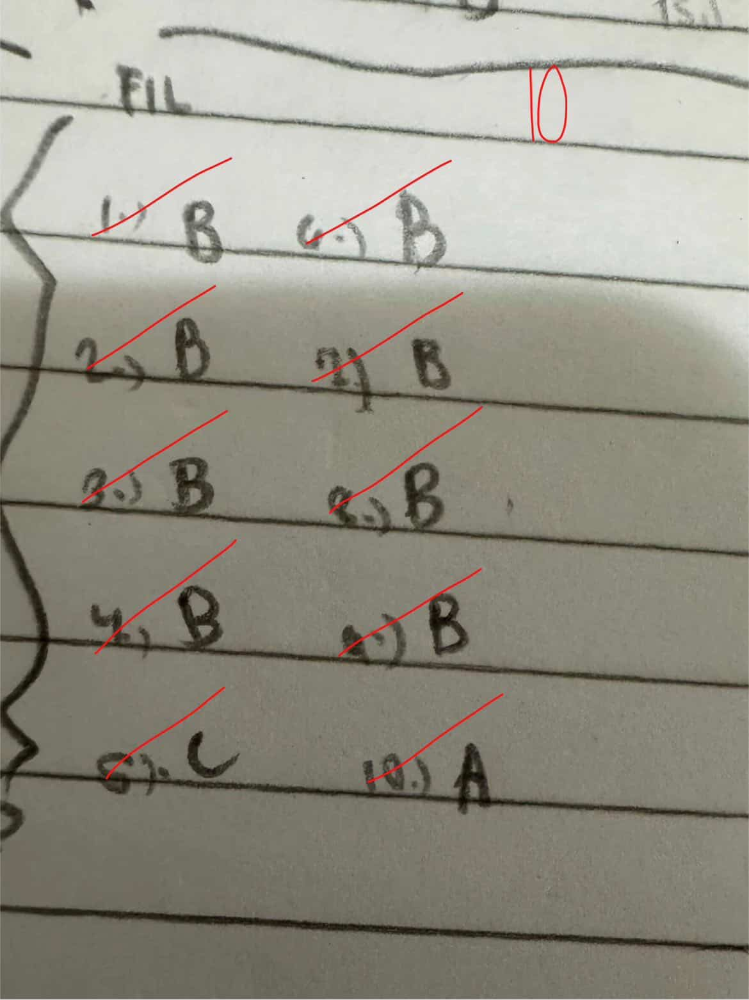
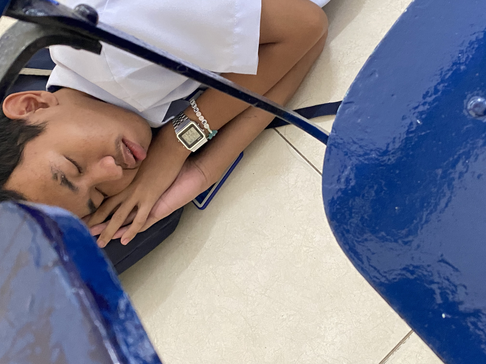

Greetings! I, Rasheed Jwyane M. Santos, a Grade 11 student at Richmindale. This is my journey through Grade 11, where I faced challenges, learned valuable lessons, grew as a person, and shows how God carries me until now throughout the years. Through this performance task, I will share my experiences and the artifacts that represent my growth. May God's grace be with you all as you read about my journey.
Artifacts

There is formally counted as a project where we do a journal which tells us about what happened in every week only from 1st grading and it stopped since our teacher from that is leaving and will resign in Richmindale. But the Journal shows my growth and reflections throughout the quarter and the most important here is I'm gonna use this journal as a draft of this final project.

As I make these codes, before the project day which makes us a web that is about us, I've been practicing to codes and designing the layout. And with the help of my classmates and ai, I was able to create a functional and visually appealing website. Not only that, but I also actually improving my coding skills even without ai.

As I help with the group of Mary and Daniel, I make more contributions and survey the topic thoroughly.

I've been told by my teacher that I should not use my phone even before class, because I've been playing games before she arrives...

My Sleep Management takes 7 hours per night from 10:00pm to 6:30am.
The Climb
In, the beginning, I woke up, took a breakfast, and then I go to school. I picked up my little sister to Al Qiyadah and then I go to school but the train is too crowded and I was struggling to get out of the train...
The Storms
As the time flows, in August, the time there was PASCERVEL report, I was playing with my phone before class and then the teacher arrived and everyone's phone was collected because of me...
The Pivots
As the time flows, I started to pivot and change my mindset. I realized that I shouldn't be afraid of making mistakes and that it's part of the learning process...
The Summit
Now, I am more disciplined and confident. My improvement is visible in my artifacts, especially in my study log and academic outputs. My life had been changed again for good.
Letter to My Past Self
Dear Past Me,
You may feel overwhelmed right now, but things will get better. I will give you a vision, where every week in school, you and whatever your groupmate is, will report the subject lesson assigned to you. There, it would be a good and bad things will happen, just prepare the things you're going to say. Another is you but don't be afraid to fail because it will help you grow. Don't think to yourself that you're not good enough, because you are. Ask for help and believe in yourself. You might thinking that "kaya ko ba toh?" yes it will be through Christ, He will support you and carry you through this. It will be a good school year, and ask to yourself that look unto the environmnents, attitudes, and ask what you're gonna do next. Also you will have a crush on that school just be a good character and do your responsibilities.
Sincerely,
Your Future Self